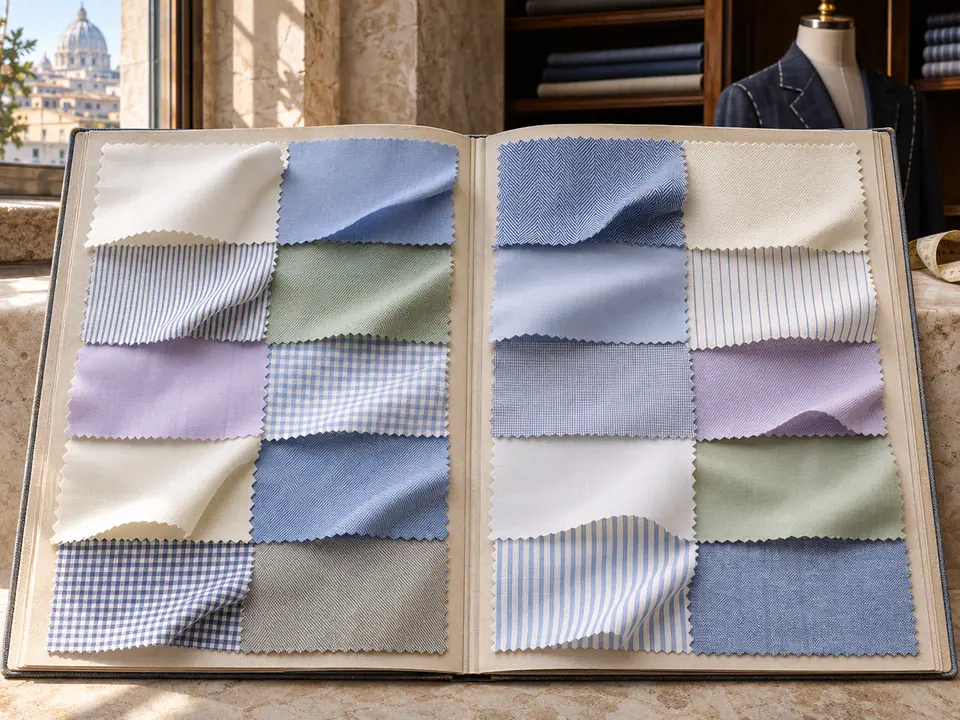

Via Nomentana, 153
00161 Roma
Desde 55 €. Camisas para hombre y mujer. Toma de medidas y elección de tejidos en tienda, en casa, en la oficina o en el hotel.

Ven a la tienda o reserva una visita gratuita en tu casa, oficina u hotel en Roma.
Escríbenos por WhatsApp o llama al +39 345 235 7524 para elegir dónde vernos.
Te enseñamos el muestrario y tomamos las medidas en la tienda o donde acordemos.
Cuando esté lista, recógela gratis en tienda o recíbela a domicilio por 10 €.
Consulta el muestrario en tienda o durante la visita. Toca los tejidos y compara lisos, rayas y cuadros en persona.



En ambas tiendas podemos tomarte las medidas. También puedes elegir el tejido y recoger gratis tu camisa.
00161 Roma
00187 Roma
Las camisas a medida para hombre y mujer cuestan desde 55 €. La visita a tu dirección en Roma es gratuita.
Puedes ir a cualquiera de nuestras tiendas en Roma, en Via Nomentana 153 o Via Venti Settembre 58D. También puedes reservar una visita gratuita en tu casa, oficina u hotel en Roma.
Sí. Puedes hojear el muestrario y tocar los tejidos en tienda o durante la visita. Hay tejidos lisos, de rayas y de cuadros.
Escríbenos por WhatsApp o llama al +39 345 235 7524 para acordar el lugar.
Puedes recogerla gratis en tienda o pedir la entrega a domicilio por 10 €.
Cuéntanos tu experiencia en Cotton Leaf, Via Nomentana 153, Roma.